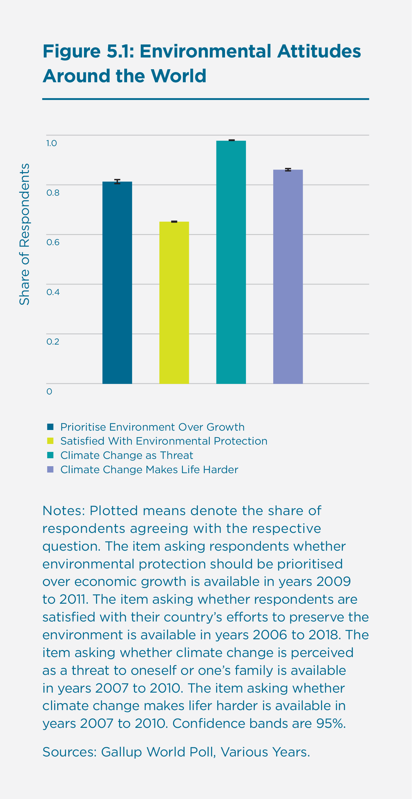

How Environmental Quality Affects Our Happiness
Introduction
On August 20, 2018, Swedish fifteen-year-old Greta Thunberg did not go to school but began to strike. Until the Swedish parliamentary election on September 9, she stood – every workday during school hours – in front of the Swedish parliament building, demanding government action to reduce carbon emissions. Her school strike for the climate soon went global. On March 15, 2019, 1.4 million young people in 128 countries took to the streets under its Fridays for Future banner to demand climate action from their governments.[1]
One month later, on April 15, thousands of protesters of all age groups and backgrounds occupied major landmarks in London in a protest organised by British climate group Extinction Rebellion, bringing widespread disruption to the city for more than ten days and resulting in more than a thousand arrests.[2] Activists also took to the streets in more than 80 other cities and countries around the world, including Australia, Canada, France, and Sweden. On May 26, Green parties had their best-ever result in a European Parliament election, overtaking traditional parties in many European Union member states.[3] Climate change and environmental protection were the dominant themes of their campaigns.
Our natural environment, how to protect it, and in particular, how to deal with the causes and consequences of climate change are clearly amongst the leading issues of our time. This is reflected not only in global movements, grassroots activism, and voting behaviour, but also in policy at the highest national and international levels.
Answering protesters’ calls, on May 1, 2019, the UK government declared a climate emergency.[4] It was followed shortly after by Ireland, Canada, and France, as well as large metropolitan areas, including Amsterdam, Milan, New York City, San Francisco, and Sydney.
In the meantime, major international organisations such as the World Bank have substantially ramped up their financial commitments to the environment and natural resource management. At the International Bank for Reconstruction and Development (IBRD) – the World Bank Group entity lending mostly to middle-income countries – commitments to the environment in fiscal year 2018 were about $10.4 billion (up by 44% from fiscal year 2017), constituting the largest financial position by topic (followed by urban and rural development with $8.6 billion). At the International Development Association (IDA), which provides interest-free loans and grants to the poorest countries, commitments have increased even more – by 65% – from $5.8 to $9.5 billion.[5] The European Bank for Reconstruction and Development (EBRD) directed 36% of its investment (€3.3 billion) into the green economy in fiscal year 2018 and aims at raising this share to 40% by 2020.[6] Other organisations, including those in the private sector, are following suit, by assessing how their operations impact the environment and incorporating environmental protection into their corporate social responsibility.
This chapter reflects the growing awareness of the major role that the natural environment plays in our happiness. It is the first in the World Happiness Report series to look at how environmental quality shapes how we feel and how we evaluate our lives. The chapter focuses on the natural environment, which is determined by the quantity of natural endowments and their change over time, as well as the quality of the environment and changes in global and local environmental quality resulting from pollution, climate change, and other factors.
The importance of the environment to people seems universal around the world. In the Gallup World Poll - a nationally representative survey that is conducted annually in more than 160 countries - respondents are regularly asked about their attitudes towards the environment. Figure 5.1 shows their responses to some of these items.[7]
Figure 5.1: Environmental Attitudes Around the World

When given the choice, 62% of respondents say they would prioritise environmental protection over economic growth. Only half of them are satisfied with efforts to preserve the environment in their countries.[8] Notably, 74% of respondents perceive global warming as a very or somewhat serious threat to them and their families, and 65% believe that climate change will make their lives harder.
The importance of the natural environment to people is confirmed in nationally representative household surveys. For example, when asked how important environmental protection is for their well-being and life satisfaction, 88% of respondents in the German Socio-Economic Panel Study (SOEP) rate it as important or very important. When asked about whether they are concerned about environmental protection, 72% state that they are somewhat or very concerned. Similarly, 70% state that they are somewhat or very concerned about the consequences of climate change.[9]
How the environment affects people’s well-being has also been the subject of academic research. More and more datasets including indicators of subjective well-being have become available in recent years and can now be merged – often at a very precise geographical level – with external, objective indicators of environmental factors. A growing stream of studies exploits these data to show how people’s feelings and life evaluations depend on these factors in their surroundings. These include, for example, geography,[10] natural capital,[11] temperature and precipitation,[12] land cover,[13] air pollution,[14] noise pollution,[15] infrastructure,[16] or natural disasters,[17] including the risk thereof.[18]
Academic interest in the relationship between the environment and happiness has been twofold: first, there has been a genuine interest in how the environment affects people’s subjective well-being. There has also been work done to use indicators of subjective well-being to monetarily value environmental factors, which are public, often intangible goods for which no market prices exist.[19] Trading off the impact of environmental factors on life satisfaction – a measure of experienced utility[20] – with that of income, this approach has been termed experienced-preference valuation.[21] Second, there is a growing interest in how pro-environmental behaviour affects people’s subjective well-being, and in turn, how people’s emotional states can be effectively leveraged to nudge them into behaving in more environmentally friendly ways.
In what follows, we first study how our natural environment shapes our happiness in international comparison by looking at differences in natural endowments and environmental quality between countries and relating these to differences in happiness at the country level. We exploit nationally representative survey data from the Gallup World Poll merged with official OECD and World Bank statistics on the environment. In the second part of the chapter we “zoom in”, by studying local environmental quality and happiness in mega cities, using the example of London. We are looking at similar environmental factors as in the first part but at a much more precise geographical level: the level of an individual’s immediate surroundings. Here, we use data from Mappiness, a smartphone app that randomly asks users during the day to report their feelings of happiness while recording the exact time of answer and their exact geographical location. Answers are then linked to environmental factors in users’ immediate surroundings at particular points in time.
How the Natural Environment Shapes Our Happiness: Evidence from Around the World
Before showing evidence on how the natural environment shapes our happiness, we first take a step back and ask: why do we expect nature to influence happiness in the first place?
There are three, potentially overlapping, reasons: first, biophilia refers to the hypothesis that there exists an instinctive, close connection between human beings and other living organisms or specific habitats arising from biological evolution, whereby nature has a direct, positive impact on happiness shaped by our evolutionary origins.[22]
There is indeed evidence in psychology suggesting that being exposed to green, natural environments improves mental well-being.[23] Mechanisms include a reduction in stress,[24] a rise in positive emotions,[25] cognitive restoration,[26] and positive effects on self-regulation.[27]
Green, Healthy, and Happy
Even short-term exposure to green is sufficient to unfold salutogenic effects. In a classical study, Ulrich (1984) studied the recovery records of surgical patients in a suburban Pennsylvania hospital between 1972 and 1981.[28] Some of the patients were – purely by chance – allocated to a room with a view of a natural setting, others to a room with a view of a brick wall. Patients facing a natural setting had shorter post-operative hospital stays, received fewer negative comments in nurses’ notes, and requested less medication. In a follow-up experiment, Ulrich et al. (1991) had 120 subjects first view a stressful film and then exposed them to videos of different natural and urban settings, measuring their self-reported affective and physiological states.[29] The authors find that stress recovery was faster and more complete when subjects were exposed to natural rather than urban settings. Mechanisms include a shift towards a more positively-toned emotional state, positive changes in physiological activity levels, and that these changes are accompanied by sustained attention. Kaplan (2001) replicated the analysis in a real-world setting for the general population, studying views of natural settings from windows in private homes, and confirmed the positive well-being effects of visible, nearby nature.[30] Interestingly, people do not anticipate these effects: Nisbet and Zelenski (2011) show that people systematically underestimate the well-being benefits of nature, potentially failing to maximise their well-being by spending more time in natural settings.[31]
Second, green, natural environments may have indirect positive impacts by encouraging certain behaviours, for example, physical exercise or social interaction, through the provision of public, open space, which improves mental or physical health and longevity, and thereby happiness.
The health benefits of green, natural environments are well-documented.[32] There is evidence in the medical and epidemiological literature for both mechanisms: natural environments encourage physical activity,[33] which brings about health benefits (that may be unevenly distributed amongst the population[34]) while encouraging social interaction.[35] Socialising with friends, relatives, or spouses is amongst the strongest determinants of happiness.[36]
Finally, green, natural environments may have higher environmental quality by being free of certain environmental stressors such as air or noise pollution, which are associated with respiratory and cardiovascular disease and heightened stress levels. At the same time, they may provide environmental goods such as scenic amenity or land cover for recreation. Both have indirect impacts on happiness, but stressors can, arguably, also have direct impacts, by causing worries when they are salient to people.
To study how the natural environment and its quality affect our happiness around the world, we first use data from the Gallup World Poll, a nationally representative survey that is conducted annually in more than 160 countries, covering more than 99 per cent of the world’s adult population. It includes about 1,000 observations per country per year, covering both urban and rural areas. Given this extensive coverage, we can study how environmental quality affects our happiness worldwide.
Our primary outcome is a survey participant’s life evaluation, obtained from the so-called Cantril ladder, which is an item asking respondents to imagine themselves on a ladder with steps numbered from zero at the bottom to ten at the top, whereby zero represents the worst possible and ten the best possible life.[37] Besides life evaluation, which is a cognitive, evaluative measure of subjective well-being, we also look at positive and negative affect, which are experiential measures.[38] These items are constructed from batteries of yes-no questions that ask respondents about their emotional experiences during the previous day. For positive affect, we include whether respondents experienced feelings of happiness and enjoyment, and whether they smiled and laughed a lot. For negative affect, we include whether respondents often experienced feelings of sadness, worry, and anger. We create indices of positive and negative affect by averaging across items. They are bounded between zero and 100.
To relate people’s happiness to the natural environment surrounding them, we restrict our sample to OECD countries and obtain internationally comparable data on different types of environmental factors – measured at the country level – from various data sources.[39] First, we obtain data on air pollution from the OECD Environmental Database, including per-capita human-made emissions of sulphur oxide (SO), nitrogen oxide (NO), particulate matter (PM10 and PM2.5), carbon monoxide (CO), and non-methane volatile organic compounds (OC).[40] Second, we use data on forest area per capita from the World Bank.[41] Finally, we obtain data on environmental factors related to climate from the World Bank’s Climate Change Knowledge Portal, including monthly average as well as minimum and maximum temperatures in degrees centigrade and monthly average precipitation in millimetres.[42] Our sample covers, for most environmental factors, the period from 2005 to 2015.
We employ multiple regression analysis to relate people’s happiness to the quality of the natural environment surrounding them. More specifically, we regress happiness, measured as life evaluation or positive or negative affect, on each type of environmental factor, alongside a range of control variables to net out differences in social and economic development between countries. Such differences may be related to happiness both directly and indirectly through differences in environmental factors. For instance, a higher level of economic development may be related to higher income, which has direct, positive effects on happiness. At the same time, however, a higher level of economic development may be related to more air pollution due to more economic activity, which has, in turn, negative effects on happiness. To isolate the effect of environmental factors on happiness, therefore, we control for a wide range of socio-demographic characteristics and economic conditions of respondents. Moreover, we control for a range of country-level characteristics, in particular GDP per capita as well as population level and density.[43] Finally, to net out fixed, regional characteristics as well as overall and region-specific time trends, we control for regions in which countries are located, years, and region-year interactions. Robust standard errors are clustered at the country level to account for correlations between observations within countries.
We take the natural logarithm of our air pollution measures to reduce skewness, while leaving all other environmental factors in their natural units. Figure 5.2 shows our findings for life evaluation as our primary outcome.
Figure 5.2: How Our Environment Affects Life Evaluation Around the World
Across the world, we find that particulate matter, measured at a per-capita per-annum level to proxy for exposure, has, on average, negative effects on how people evaluate their lives: both PM10 (larger particulates) and PM2.5 (smaller ones) are associated with significantly decreased overall life evaluation. Both pollutants are statistically significant at the 5% level; differences between them, however, turn out insignificant. A 1% increase in PM10 per capita per annum (about 150 grams at the mean) decreases overall life evaluation by about 0.0064 points on a zero-to-ten scale. A 1% increase in PM2.5 (about 60 grams at the mean) decreases overall life evaluation by about 0.0036 points. Negative effects of air pollution on life evaluation are well-documented in the subjective well-being literature.[44] Figures A1 and A2 in the Appendix show that pollutants in most cases fail to significantly change affect, suggesting that how people evaluate their lives overall is more sensitive to air pollution, especially particulate matter, than how they report to feel on a day-to-day basis.
Besides sample compositional effects (the Gallup World Poll oversamples urban areas where particulate matter might be more prevalent), strong effect sizes for particulate matter may be due to its relatively higher salience compared to other, relatively odourless and less noticeable air pollutants. Particulate matter has also featured highly in the media and on the political agenda recently, especially in discussions centring around the surpassing of particulate matter threshold values in inner cities and bans on diesel cars, which potentially contributes to its salience. Besides indirect, worry-related effects, negative impacts of particulate matter on health have been documented, which may directly contribute to a reduction in overall life evaluation.[45]
Next, we look at climate. To account for non-linear effects of average, minimum, and maximum temperature per month, we include both the level and the squared term of the respective measure in our regressions. We find that both monthly average and maximum temperature significantly decrease overall life evaluation at the 5% level; monthly minimum temperature seems to matter less for how people evaluate their lives overall. There is some evidence for non-linear relationships between temperatures and life evaluation, but squared terms turn out to be rather small and only statistically significant at the 10% level. Overall, this is suggestive of a preference for milder climate. Contrary to temperature, average monthly precipitation seems to matter little for life evaluation. Figures A1 and A2 in the Appendix show that the impacts of temperatures on life evaluation are mirrored by impacts on positive (rather than negative) affect. Again, the impact of climate on life evaluation is well-documented.[46]
When it comes to land cover, and in particular, per-capita area of natural forests, we find that the area of forests in a country has no significant effect on how people evaluate their lives. We find no impacts on how they feel about their lives on a day-to-day basis either. Finally, we studied whether environmental factors influence people’s happiness differently depending on whether they live inside or outside cities, but we did not find significant differences: most point estimates are very similar, and where differences exist, they mostly turn out to be insignificant.
Natural Land, Scenic Beauty, and Happiness
Are people who live closer to nature happier? Sampling the happiness of more than 20,000 users of the smartphone app Mappiness, who contribute more than one million unique, geo-located data points, and leveraging data on land cover from the UK Centre for Ecology and Hydrology’s Land Cover Map 2000, MacKerron and Mourato find that people living in the UK report the highest happiness when outdoors and in natural habitats relative to dense urban areas.[47] In particular, they are happiest when close to marine and coastal marginal areas; mountains, moors, and heathland; and woodland. Kopmann and Rehdanz show that this positive relationship holds in 31 European countries, and that people prefer “balanced” over “extreme” allocations of land; that is, they prefer more variety in natural land cover.[48] An important channel for the positive relationship between natural land and happiness may be a deep preference of people for nature, which may manifest itself in a preference for certain, more natural landscapes. In fact, Seresinhe et al., using crowdsourced data of ratings of over 200,000 photos of Great Britain and machine learning algorithms to evaluate the scenic beauty of images, show that natural features such as coasts, mountains, and natural canals as well as areas with more tree cover are rated as more scenic.[49] Scenic beauty, however, does not seem to be limited exclusively to natural environments but can also relate to the built environment.[50]
So far, we have been looking at how our environment affects our happiness around the world, by linking environmental factors, measured at the country level, to the happiness of survey respondents living in the respective country. However, not everybody is exposed to them in the same way, and our point estimates implicitly assume that their impacts are immediate to everybody, which is unlikely to be the case. For example, we have had to assume that air pollutants are evenly mixed throughout a country, whereas, for example, particulate concentrations vary strongly with distance to their sources, such as major roads. A more refined analysis is thus needed to link our immediate environment to our happiness. We turn to this type of analysis in the next section.
Local Environmental Quality and Happiness in Mega Cities: The Case of London
We now move from a highly generalised approach which relates country-level averages of happiness to country-level averages of environmental characteristics to a highly specific one, which relates individuals’ momentary happiness to characteristics of their immediate environmental surroundings. In doing so, we narrow our geographical focus to a single large city (London) rather than looking across countries, and our treatment of well-being to a momentary hedonic rather than global evaluative measure.[51]
Our data source on well-being is the Mappiness study.[52] This is a panel data set collected in the UK between 2011 and 2018, using a smartphone app to elicit repeated self-reports of happiness and some key control variables alongside a precise timestamp and GPS location. The full data set comprises around 4.5 million responses from 66,000 volunteers, but we limit this to a subset of approximately half a million responses located in Greater London from about 13,000 respondents. The sample is self-selected, and hence not representative of the country as a whole (for example, the average respondent is somewhat younger, wealthier, and more likely to be in education or employment than the average citizen). Nevertheless, the size and richness of the data enable us to address the link between happiness and the environment in a particularly powerful way.
We join a number of environmental data sets to this well-being data set using the location and/or time of response. All environmental characteristics are coded as one or more binary variables (for example, we split air temperature into 5°C bands between < 0°C and ≥ 25°C).[53]
Weather and daylight
Weather is an important environmental characteristic in its own right, and also represents a key control when considering other characteristics. For example, weather conditions may affect both airborne pollutant concentrations and an individual’s decision to spend time outdoors and in natural environments. Using data from the UK Met Office Integrated Data Archive System (MIDAS), we link each response with the conditions reported by the weather station nearest to the response location at the nearest available moment to the response time.[54] We include data on air temperature, wind speed, precipitation, sunshine, and cloud cover. We also calculate whether there was daylight at the response date, time, and location.[55]
Air quality
Air pollution concentrations in Greater London, now and during the period covered by our data set, are relatively high. For example, in 2014, 39 out of 69 monitoring sites recorded a breach of EU objectives for NO2.[56] This has substantial impacts on health and mortality.[57] We use pollutant concentration maps for 2008, 2010, and 2013 from the London Atmospheric Emissions Inventory (LAEI)[58] in conjunction with historical hourly ‘Nowcast’ pollutant concentration estimates supplied by the London Air Quality Network (LAQN). These combined data sources enable us to estimate NO2 and PM10 concentrations within a 20m grid cell and for the appropriate date and hour for each response.[59] For all air quality variables, we treat the middle 50% of the distribution as the baseline, and create binary variables indicating very low (bottom 5% of estimates), quite low (next 20% upward), very high (top 5%), and quite high (next 20% downward) concentrations.
Noise
During responses to the Mappiness survey, noise levels were measured using the phone’s microphone. We include binary variables indicating the top and bottom quartiles of these noise levels. This could be an important control in relation to air pollution, which is likely to be high where there is also greater traffic noise, but is subject to the important caveat that we cannot tell what sources of noise are being measured in each case: these could equally be music, conversation, birdsong, and so on.
Green spaces
Responses from within green areas, such as parks and allotments, were identified using the Ordnance Survey Open Greenspace data set.[60] Responses within areas of street tree cover were recognised via the Street Tree Layer of the European Environment Agency’s European Urban Atlas data.[61]
Blue spaces: ponds, lakes, canals, and rivers
Binary variables indicating proximity to the tidal River Thames were created using the outline of England and Wales clipped to the high water mark.[62] One variable indicates that the respondent is on or within 10m of the river — likely on a bridge, vessel, or bank — while a second indicates that they are within 10 – 50m of either bank. We also create a binary variable for proximity to canals using the Ordnance Survey Open Rivers data set, identifying responses within 20m of each waterway’s centreline.[63] Finally, we create two binary variables that flag proximity to ponds and lakes using data from the UK Centre for Ecology & Hydrology (CEH) Lakes Portal.[64] Like the River Thames variables, these indicate that a response is made either within 10m of the water body, or within 10 – 50m of its banks.
Using Mappiness and these other spatial data sources, we estimate multiple regression models similar to those in the earlier section, but at a different scale. Each data point in these regressions is a happiness report by a single individual at a particular moment in time, and we seek to explain that report with reference to the other data available. Descriptive statistics for the environmental variables used are shown in Table A6 of the appendix.
In order to isolate the impacts of environmental factors from other influences, we include a range of control variables, including a large set of dummy variables to account for temporal variations in momentary happiness.[65] Controls also include variables that indicate respondents’ choices, such as what respondents are currently doing; whom they are with; whether they are at home, at work, or somewhere else; and whether they are indoors, outdoors, or in a vehicle. In addition, all models control for individual fixed effects. Given that the average Mappiness user participates for about six weeks, we regard these fixed effects as adequate controls for person-specific characteristics such as age, gender, marital status, employment status, personality, and so on. Controlling for individual fixed effects means that our models are estimated using only the within-person variation in the data, and this helps us to rule out that effects are caused by selection of different individuals into different environments.[66] Finally, we include local-area fixed effects for each of the 983 Middle Layer Super Output Areas (MSOAs) that make up Greater London.[67] This helps increase confidence that we are truly picking up the effects of environmental characteristics, rather than many possible correlates that also vary by location (for example, central versus suburban areas or property values). Standard errors are clustered accordingly.[68]
A key issue in analysing environmental influences on subjective well-being is that individuals make choices about the environments in which they spend time. Because these choices may depend on their current well-being and/or current environmental characteristics, estimating causal effects is challenging.[69] Our baseline model includes all environmental characteristics for which we have data, only applied for when respondents are outdoors, where these environmental characteristics are more directly experienced. The results of this model are presented in Figure 5.2. Note that momentary happiness is recorded on a zero-to-100 scale (unlike the Cantril ladder in the previous section, which runs from zero to ten). Variations of our baseline model, and a reduced-choice model that has a stronger causal interpretation but includes a much more limited range of environmental data, are presented in the Appendix to this chapter.
Figure 5.3: Happiness Associations With Environmental Characteristics When Outdoors in Great-er London
We find that being outdoors in green or blue spaces is predictive of a significant boost in happiness. Responses that are from public green spaces such as parks and allotments are on average approximately one percentage point happier than responses that are not (after taking into account all controls). Happiness responses from areas with street trees show roughly the same increase. Responses from the vicinity of the River Thames or a canal are happier still, by on average 1.3 to 2.2 percentage points. Reported happiness is not significantly different near ponds and lakes (these coefficients are still positive, and it might be that the standard errors are large simply because the sample size is relatively small).
Weather conditions when outdoors also have substantial and intuitive effects. In particular, unbroken sunshine adds nearly two percentage points to happiness, while air temperatures of 25°C or higher add almost three points.[70] Conversely, rain and high winds (15 knots and above) are both significantly negative, reducing happiness by close to one percentage point each.
Activities that are typically undertaken outdoors and in nature have the largest effects. Walking or hiking predicts an increase of two percentage points in happiness, while gardening, nature watching, and sporting activities each add on between four and seven points. Finally, simply being outside has a positive association of its own, on top of the environmental interaction effects mentioned above: outdoor responses are just over 1.5 percentage points happier than indoor ones.
We do not see significant effects of either NO2 or PM10 concentrations in our baseline model. Since the health and mortality impacts of air pollution are well-documented, this should not be taken as indicating that air pollution is unimportant for well-being, but rather that the present method is not effective at assessing well-being effects of these pollutants (perhaps because acute impacts are limited at the concentrations typically observed in London). The more limited model presented in the Appendix does identify a modest negative impact of middling and high NO2 concentrations, however. We see no influence of noise levels as measured by the respondent’s smartphone, except a marginal indication that quiet outdoor environments are less happy, but since noise may be generated by a wide range of different processes this finding does not have a clear interpretation.
Overall, these results support the importance of positive features of the natural environment for individuals’ happiness in cities. We find that being in green or blue spaces or a variety of (intuitively pleasant) weather conditions is in each case associated with an increase of one to three percentage points on the happiness scale. Based on earlier research with the Mappiness data set,[71] these effect sizes are roughly equivalent to those associated with everyday leisure activities (one percentage point is approximately the increase seen for rest and relaxation; two points for washing and dressing, or eating and snacking; and three points for playing computer games, or playing with pets). On that basis, these environmental effects are of a meaningful size. Since we control for many of the indirect benefits that natural environments facilitate, including outdoor leisure activities and interaction with friends and family, the total benefits of these environments are likely even higher. Furthermore, the effects may commonly be combined, so that when people spend time outdoors, near both green and blue space, and in warm and sunny weather, we can expect happiness levels to be elevated further still.
Green Spaces and Happiness
Green spaces are beneficial for nearby residents. There is an established evidence base documenting the positive effects of green spaces on residents’ health. Besides that, there is growing evidence which shows that there is a significant, positive relationship between the amount of green space around households and the happiness of household[72] residents living in closer proximity to the nearest green space report, on average, significantly higher life satisfaction. This is especially true for older residents who are presumably less mobile and for whom the immediate, local environment matters relatively more.[73] Importantly, unlike with other life circumstances and living conditions, there seems to be little adaptation to green spaces: green spaces seem to have permanent, positive effects on residential well-being.[74] It is unfortunate, then, that there is often an undersupply of green spaces: Krekel et al., for example, document that residents in the 32 major German cities (with inhabitants equal to or greater than 100,000) fall short by about a third of the optimal supply, that is, the life-satisfaction maximising amount, of green spaces.[75] A potentially cost-effective way to increase the amount of green spaces in cities is to transform currently vacant land, which is associated with reduced life satisfaction, into green spaces. In densely built cities where no vacant land is available, architectural innovations such as vertical gardens could be used.
Discussion
We have seen that people world-wide recognise the importance of the natural environment and its protection to their continued well-being, and the particular threat posed by climate change amongst the wide range of environmental risks we face. Bringing quantitative evidence to this relationship is challenging for three reasons: first, individuals can choose to seek out or avoid particular environmental characteristics, which may obscure their true benefits or costs. Second, experiences of the physical environment — such as exposure to air pollutants — are often brief and localised, and thus hard to accurately capture, while their effects may be cumulative and long-term. And third, environmental changes are typically gradual, non-random, and at least partially anticipated, so that natural experiments are hard to find.
In this chapter, we follow two contrasting approaches to estimating the strength of the relationship between natural environmental quality and happiness, which bring complementary strengths and weaknesses. At the most aggregated level, we analyse averaged environmental quality in relation to well-being levels (both evaluative and experiential) across OECD countries. We find significant effects of climate and air pollutant emissions, and these point in intuitive directions.
At the other end of the scale, we analyse a large panel of individuals’ momentary hedonic experiences of happiness in the range of environments found in one large city: London. Although the data and underlying method are quite different, this second analysis broadly corroborates and extends the first. We find significant weather effects, and strong positive effects of both green and blue spaces on self-reported happiness. We are not able to pick up a clear negative effect of air pollution using this method, however, despite the increasingly well-documented damage it does to physical health. Air pollution seems difficult to adequately quantify: when it comes to individuals’ momentary experiences of happiness, exposures to air pollution may be brief and not necessarily salient. When it comes to cross-country analyses, findings are sensitive to measures of air pollutants and often correlate with economic activity and levels of development, which may confound the relationship. This point perhaps highlights an important area for future work: improving models to help us understand the total, causal impact of the natural environment on happiness, and in particular, the variety of routes and mechanisms by which this impact is felt, which can range from the satisfaction of basic needs and physical health impacts to socio-cultural influences and aesthetic or spiritual effects.
References
Agyemang, C., Hooijdonk, C., Wendel-Vos, W., Lindeman, E., Stronks, K., & Droomers, M. (2007). The association of neighbourhood psychosocial stressors and self-rated health in Amsterdam, The Netherlands. Journal of Epidemiology and Community Health, 61(12), 1042–1049.
Alcock, I., White, M. P., Wheeler, B. W., Fleming, L. E., & Depledge, M. H. (2014). Longitudinal Effects on Mental Health of Moving to Greener and Less Greener Urban Areas. Environmental Science and Technology, 48(2), 1247–1255.
Ambrey, C. L., & Fleming, C. M. (2011). Valuing scenic amenity using life satisfaction data. Ecological Economics, 72, 106–115.
Ambrey, C. L., Fleming, C. M., & Chan, A. Y.-C. (2014). Estimating the cost of air pollution in South East Queensland: An application of the life satisfaction non-market valuation approach. Ecological Economics, 97, 172–181.
Ambrey, C. L., & Fleming, C. (2014). Public Greenspace and Life Satisfaction in Urban Australia. Urban Studies, 51(6), 1290–1321.
Anderson, J. O., Thundiyil, J. G., and Stolbach, A. (2012). Clearing the Air: A Review of the Effects of Particulate Matter Air Pollution on Human Health. Journal of Medical Toxicology, 8, 166-175.
Annerstedt, M., Östergren, P. O., Björk, J., Grahn, P., Skärbäck, E., & Währborg, G. (2012). Green qualities in the neighbourhood and mental health – results from a longitudinal cohort study in Southern Sweden. Public Health, 12, 337.
Berlemann, M. (2016). Does hurricane risk affect individual well-being? Empirical evidence on the indirect effects of natural disasters. Ecological Economics, 124, 99–113.
Berman, M. G., Jonides, J., & Kaplan, S. (2008). The Cognitive Benefits of Interacting With Nature. Psychological Science, 19(2), 1207–1212.
Bertram, C., & Rehdanz, K. (2015). The role of urban green space for human well-being. Ecological Economics, 120, 139–152.
Bertram, C., Goebel, J., Krekel, C., & Rehdanz, K. (2020). Urban Land Use Fragmentation and Human Wellbeing. Kiel Working Papers, 2147.
Brereton, F., Clinch, J.-P., & Ferreira, S. (2008). Happiness, geography and the environment. Ecological Economics, 65(2), 386–396.
Bryson, A., & MacKerron, G. (2017). Are You Happy While You Work? Economic Journal, 127(599), 106–125.
Cantril, H. (1965). The pattern of human concerns. Rutgers University Press.
Clark, A. E., Flèche, S., Layard, R., Powdthavee, N., & Ward, G. (2018). The Origins of Happiness: The Science of Well-Being Over the Life Course. Princeton University Press.
Correia (2017). ‘REGHDFE: Stata module for linear and instrumental-variable/GMM regression absorbing multiple levels of fixed effects’. Statistical Software Components S457874, Boston College Department of Economics. https://ideas.repec.org/c/boc/bocode/s457874.html
de Vries, S., Verheij, R. A., Groenewegen, P. P., & Spreeuwenberg, P. (2003). Natural Environments – Healthy Environments? An Exploratory Analysis of the Relationship between Greenspace and Health. Environment and Planning A: Economy and Space, 35(10), 1717–1731.
Dolan, P., & K. Laffan (2016) “Bad air days: The effects of air quality on different measures of subjective well-being,” Journal of Benefit-Cost Analysis, 7(1), 147–195.
Eibich, P., Krekel, C., Demuth, J., & Wagner, G. (2016). Associations between Neighborhood Characteristics, Well-Being and Health Vary over the Life Course. Gerontology, 62(3), 362–370.
Engelbrecht, H.-J. (2009). Natural capital, subjective well-being, and the new welfare economics of sustainability. Ecological Economics, 69, 380–388.
European Bank for Reconstruction and Development (2019). European Bank for Reconstruction and Development, Annual Review 2018.
European Environment Agency (2016). Urban Atlas, Street Tree Layer 2012. European Environment Agency Copernicus Programme. Online: https://land.copernicus.eu/local/urban-atlas/street-tree-layer-stl
Ferreira, S., Akay, A., Brereton, F., Cuñado, J., Martinsson, P., Moro, M., & Ningal, T. F. (2013). Life satisfaction and air quality in Europe. Ecological Economics, 88, 1–10.
Frey, B. S., Lüchinger, L., & Stutzer, S. (2010). The Life Satisfaction Approach to Environmental Valuation. Annual Review of Resource Economics, 2, 139–160.
Frijters, P., Clark, A., Krekel, C., & Layard, R. (2019). A happy choice: Wellbeing as the goal of government. Behavioural Public Policy.
Gidlöf-Gunnarsson, A., & Öhrström, E. (2007). Noise and well-being in urban residential environments: The potential role of perceived availability to nearby green areas. Landscape and Urban Planning, 83(2–3), 115–126.
Goebel, J., Krekel, C., Tiefenbach, T., & Ziebarth, N. R. (2015). How natural disasters can affect environmental concerns, risk aversion, and even politics: Evidence from Fukushima and three European countries. Journal of Population Economics, 28(4), 1137–1180.
Guardian (2019a). School climate strikes: 1.4 million people took part, say campaigners, Online: http://www.theguardian.com/environment/2019/mar/19/school-climate-strikes-more-than-1-million-took-part-say-campaigners-greta-thunberg, last accessed 09/07/2019.
Guardian (2019b), Thousands block roads in Extinction Rebellion protests across London, Online: http://www.theguardian.com/environment/2019/apr/15/thousands-expected-in-london-for-extinction-rebellion-protest, last accessed 09/07/2019.
Guardian, (2019c). Extinction Rebellion arrests pass 1,000 on eighth day of protests, Online: http://www.theguardian.com/environment/2019/apr/22/people-arrested-at-london-climate-protests, last accessed 09/07/2019.
Guardian (2019d). Greens surge as parties make strongest ever showing across Europe, Online: http://www.theguardian.com/politics/2019/may/26/greens-surge-as-parties-make-strongest-ever-showing-across-europe, last accessed 09/07/2019.
Guardian (2019e). UK citizens’ assembly on climate emergency announced, Online: http://www.theguardian.com/environment/2019/jun/20/uk-citizens-assembly-on-climate-emergency-announced, last accessed 09/07/2019.
Guite, H. F., Clark, C., & Ackrill, G. (2006). The Impact of the Physical and Urban Environment on Mental Well-Being. Public Health, 120(12), 1117–1126.
Hartig, T., Evans, G. W., Jamner, L. D., Davis, D. S., & Gärling, T. (2003). Tracking restoration in natural and urban field settings. Journal of Environmental Psychology, 23(2), 109–123.
Hughes, M., Hornby, D. D., Bennion, H., Kernan, M., Hilton, J., Phillips, G., & Thomas, R. (2004). The Development of a GIS-based Inventory of Standing Waters in Great Britain together with a Risk-based Prioritisation Protocol. Water, Air and Soil Pollution: Focus, 4(2), 73–84.
Kahneman, D., & Sugden, R. (2005). Experienced Utility as a Standard of Policy Evaluation. Environmental and Resource Economics, 32(1), 161–181.
Kahneman, D., Krueger, A. B., Schkade, D. A., Schwarz, N., & Stone, A. A. (2004). A Survey Method for Characterizing Daily Life Experience: The Day Reconstruction Method. Science, 306(5702), 1776–1780.
Kahneman, D., Wakker, P. P., & Sarin, R. (1997). Back to Bentham? Explorations of Experienced Utility. Quarterly Journal of Economics, 112(2), 375–405.
Kaplan, R. (2001). The Nature of the View from Home: Psychological Benefits. Environment and Behavior, 33(4), 507–542.
Karmanov, D., & Hamel, R. (2008). Assessing the restorative potential of contemporary urban environment(s): Beyond the nature versus urban dichotomy. Landscape and Urban Planning, 86(2), 115–125.
Kopmann, A., & Rehdanz, K. (2013). A human well-being approach for assessing the value of natural land areas. Ecological Economics, 93, 20–33.
Krekel, C. (n.d). Valuing Energy Infrastructure Externalities Using Wellbeing and Hedonic Price Data: The Case of Wind Turbines. In D. Maddison, K. Rehdanz, & H. Welsch (Eds.), Handbook on Wellbeing, Happiness and the Environment. Edward Elgar, forthcoming.
Krekel, C., & Zerrahn, A. (2017). Does the presence of wind turbines have negative externalities for people in their surroundings? Evidence from well-being data. Journal of Environmental Economics and Management, 82, 221–238.
Krekel, C., Kolbe, J., & Wüstemann, H. (2016). The greener, the happier? The effect of urban land use on residential well-being. Ecological Economics, 121, 117–127.
Kuehn, S., Duezel, S., Eibich, P., Krekel, C., Wuestemann, H., Kolbe, J., Martensson, J., Goebel, J., Gallinat, J., Wagner, G. G., & Lindenberger, U. (2017). In search of features that constitute an ‘enriched environment’ in humans: Associations between geographical properties and brain structure. Nature: Scientific Reports, 7(11920), 1–8.
Leslie, E., & Cerin, E. (2008). Are perceptions of the local environment related to neighbourhood satisfaction and mental health in adults? Preventive Medicine, 47(3), 273–278.
Levinson, A. (2012). Valuing public goods using happiness data: The case of air quality. Journal of Public Economics, 96(9–10), 869–880.
Lucas, R. E., & Lawless, N. M. (2013). Does life seem better on a sunny day? Examining the association between daily weather conditions and life satisfaction judgments. Journal of Personality and Social Psychology, 104(5), 872–878.
Lüchinger, S. (2009). Valuing Air Quality Using the Life Satisfaction Approach. Economic Journal, 119(536), 482–515.
Lüchinger, S., & Raschky, P. (2009). Valuing flood disasters using the life satisfaction approach. Journal of Public Economics, 93, 620–633.
Maas, J., Verheij, R. A., Groenewegen, P. P., Vries, S., & Spreeuwenberg, P. (2006). Green space, urbanity, and health: How strong is the relation? Journal of Epidemiology and Community Health, 60(7), 587–592.
Maas, J., Verheij, R. A., Spreeuwenberg, P., & Groenewegen, P. P. (2008). Physical activity as a possible mechanism behind the relationship between green space and health: A multilevel analysis. Public Health, 8, 260–273.
Maas, J., Verheij, R. A., Vries, S., Spreeuwenberg, P., Schellevis, F. G., & Groenewegen, P. P. (2009). Morbidity is related to a green living environment. Journal of Epidemiology and Community Health, 63(12), 967–973.
MacKerron, G. (2012). Happiness and Environmental Quality. PhD thesis, London School of Economics and Political Science. Online: http://etheses.lse.ac.uk/383
MacKerron, G., & Mourato, S. (2013). Happiness is greater in natural environments. Global Environmental Change, 23, 992–1000.
MacKerron, G., & Mourato, S. (n.d.). Mappiness: Natural environments and in-the-moment happiness. In D. Maddison, K. Rehdanz, & H. Welsch (Eds.), Handbook on Wellbeing, Happiness and the Environment. Edward Elgar, forthcoming.
Maddison, D., & Rehdanz, K. (2011). The impact of climate on life satisfaction. Ecological Economics, 70(12), 2437–2445.
Met Office (2006a). MIDAS UK hourly rainfall data. NCAS British Atmospheric Data Centre.
Met Office (2006b). MIDAS UK hourly weather observation data. NCAS British Atmospheric Data Centre.
Mittal, L., T. Bakerand, & G. Fuller (2014). London Air Quality Network Summary Report 2014, Environmental Research Group, King’s College London. Online: https://www.londonair.org.uk/london/reports/2014_LAQN_Summary_Report.pdf
Morbidity is related to a green living environment. Journal of Epidemiology and Community Health, 63(12), 967–973.
Morton, D., Rowland, C., Wood, C., Meek, L., Marston, C., & Smith, G. (2011). Final report for LCM2007—The new UK land cover map. NERC/Centre for Ecology & Hydrology Countryside Survey Technical Report, 11(07).
Murray, T., Maddison, D., & Rehdanz, K. (2013). Do Geographical Variations in Climate Influence Life-Satisfaction? Climate Change Economics, 4(1).
Nielsen, T. S., & Hansen, K. B. (2007). Do green areas affect health? Results from a Danish survey on the use of green areas and health indicators. Health and Place, 13(4), 839–850.
Nisbet, E. K., & Zelenski, J. M. (2011). Underestimating Nearby Nature: Affective Forecasting Errors Obscure the Happy Path to Sustainability. Psychological Science, 22(9), 1101–1106.
O’Campo, P., Salmon, C., & Burke, J. (2009). Neighbourhoods and mental well-being: What are the pathways? Health and Place, 15(1), 56–58.
OECD (2020). Environment: Air and climate, Online: https://data.oecd.org/environment.htm, last accessed 08/01/2020.
Office for National Statistics (2011). 2011 Census: Boundary data (England and Wales), 2011 Census: boundary data (England and Wales). UK Data Service. SN:5819 UKBORDERS: Digitised Boundary Data, 1840-.
Office for National Statistics (n.d.). Census Geography. Online:
https://www.ons.gov.uk/methodology/geography/ukgeographies/censusgeography
Ordnance Survey (2018). OS Open Greenspace: Technical specification, 2018. https://www.ordnancesurvey.co.uk/documents/os-open-greenspace-technical-specification.pdf
Potwarka, L. R., Kaczynski, A. T., & Flack, A. L. (2008). Places to Play: Association of Park Space and Facilities with Healthy Weight Status among Children. Journal of Community Health, 33(5), 344–350.
Rehdanz, K., & Maddison, D. (2008). Local environmental quality and life-satisfaction in Germany. Ecological Economics, 64(4), 787–797.
Rehdanz, K., Welsch, H., Narita, D., & Okubo, T. (2015). Well-being effects of a major natural disasters: The case of Fukushima. Journal of Economic Behavior & Organization, 116, 500–517.
Richardson, E. A., Pearce, J., Mitchell, R., & Kingham, S. (2013). Role of physical activity in the relationship between urban green space and health. Public Health, 127(4), 318–324.
Rohr, A. C., and Wyzga, R. E. (2012). Attributing health effects to individual particulate matter constituents. Atmospheric Environment, 62, 130-152.
Sefick S. A. Jr., 2009, Stream Metabolism: A package for calculating single station metabolism from diurnal oxygen curves. CRAN repository. http://CRAN.R-project.org/package=StreamMetabolism
Seresinhe, C., Preis, T., & Moat, H. (2017). Using deep learning to quantify the beauty of outdoor places. Royal Society Open Science, 4(7), 170.
Seresinhe, C., Preis, T., MacKerron, G., & Moat, H. (2019). Happiness is Greater in More Scenic Locations. Nature: Scientific Reports, 9(1), 4498.
Smyth, R., Mishra, V., & Qian, X. (2008). The Environment and Well-Being in Urban China. Ecological Economics, 68(1–2), 547–555.
Stigsdotter, U. K., Ekholm, O., Schipperijn, J., Toftager, M., Kamper-Jorgensen, F., & Randrup, T. B. (2010). Health promoting outdoor environments – Associations between green space, and health, health-related quality of life and stress based on a Danish national representative survey. Scandinavian Journal of Public Health, 38(4), 411–417.
Takano, T., Nakamura, K., & Watanabe, M. (2002). Urban residential environments and senior citizens’ longevity in megacity areas: The importance of walkable green spaces. Journal of Epidemiology and Community Health, 56(12), 913–918.
Ulrich, R. S. (1983). Aesthetic and Affective Response to Natural Environment. In I. Altman & J. F. Wohlwill (Eds.), Behavior and the Natural Environment. Human Behavior and Environment (Advances in Theory and Research). Springer.
Ulrich, R. S. (1984). View through a window may influence recovery from surgery. Science, 224(4647), 420–421.
Ulrich, R. S., Simons, R. F., Losito, B. D., Fiorito, E., Miles, M. A., & Zelson, M. (1991). Stress recovery during exposure to natural and urban environments. Journal of Environmental Psychology, 11(3), 201–230.
van den Berg, A. E., Maas, J., Verheij, R. A., & Groenewegen, P. P. (2010). Green space as a buffer between stressful life events and health. Social Science & Medicine, 70(8), 1203–1210.
van Praag, B. M. S., & Baarsma, B. E. (2005). Using Happiness Surveys to Value Intangibles: The Case of Airport Noise. Economic Journal, 115(500), 224–246.
von Möllendorff, C., & Welsch, H. (2017). Measuring Renewable Energy Externalities: Evidence from Subjective Well-being Data. Land Economics, 93(1), 109–126.
Walton, H., D. Dajnak, S. Beevers, M. Williams, P. Watkiss, & A. Hunt (2015). Understanding the Health Impacts of Air Pollution in London, Environmental Research Group, King’s College London, for Transport for London and the Greater London Authority. Online:
https://www.kcl.ac.uk/lsm/research/divisions/aes/research/ERG/research-projects/HIAinLondonKingsReport14072015final.pdf
Weinhold, D. (2013). The Happiness-Reducing Costs of Noise Pollution. Journal of Regional Science, 53(2), 292–303.
Wells, N. M., & Evans, G. W. (2003). Nearby Nature: A Buffer of Life Stress among Rural Children. Environment and Behavior, 35(3), 311–330.
Welsch, H. (2007). Environmental welfare analysis: A life satisfaction approach. Ecological Economics, 62(3–4), 544–551.
Welsch, H., & Ferreira, S. (2013). Environment, Well-Being, and Experienced Preference. International Review of Environmental and Resource Economics, 7, 205–238.
White, M. P., Alcock, I., Wheeler, B. W., & Depledge, M. H. (2013). Would You Be Happier Living in a Greener Urban Area? A Fixed-Effects Analysis of Panel Data. Psychological Science, 24(6), 920–928.
Wilson, E. O. (1984). Biophilia. Harvard University Press.
World Bank Group (2018). Annual Report 2018: Ending Poverty. Investing in Opportunity.
World Bank (a). DataBank. Online: http://climateknowledgeportal.worldbank.org/download-data, last accessed 08/01/2020.
World Bank (b). Climate Change Knowledge Portal. Online: http://climateknowledgeportal.worldbank.org/download-data, last accessed 08/01/2020.
Zhang, X., Zhang, X., & Chen, X. (2017a). Happiness in the air: How does a dirty sky affect mental health and subjective well-being. Journal of Environmental Economics and Management, 85, 81–94.
Zhang, X., Zhang, X., & Chen, X. (2017b). Valuing Air Quality Using Happiness Data: The Case of China. Ecological Economics, 137, 29–36.
Endnotes
See Guardian (2019a). ↩︎
See Guardian (2019b), Guardian (2019c). ↩︎
See Guardian (2019d). ↩︎
See Guardian (2019e). ↩︎
World Bank Group (2018). ↩︎
European Bank for Reconstruction and Development (2019). ↩︎
There is variation in terms of interview years and regional coverage of these items in the Gallup World Poll. The item on environmental protection versus economic growth was asked from 2009 to 2011 in the Commonwealth, Southeast Asia, South Asia, East Asia, and Latin America. The item on satisfaction with efforts to preserve the environment was asked from 2006 to 2018 in all regions. The item on global warming as a threat to oneself or one’s family was asked from 2007 to 2010 in all regions. The item on whether life gets harder as a result of climate change was asked from 2007 to 2010 in Europe, the Commonwealth, Southeast Asia, South Asia, East Asia, Latin America, the Middle East, and Sub-Saharan Africa. Although some of these items are not up to date, one can reasonably argue that the importance of the environment to people is generally increasing over time, due to the increasing salience of issues such as climate change. Thus, past responses may be interpreted as lower bounds to potential responses today. ↩︎
Stated attitudes towards the environment also translate into pro-environmental behaviour: 62% of respondents state that they tried to use less water in their households, 45% that they avoided using certain products which are known to harm the environment, and 28% that they voluntarily recycled in the past year. Such stated attitudes and behaviours are, of course, to some extent subject to social desirability bias. ↩︎
The item on the importance of the environment for wellbeing and satisfaction was last asked in 1999. The items on worries about environmental protection and climate change were last asked in 2016. ↩︎
Brereton et al. (2008). ↩︎
Engelbrecht (2009). ↩︎
MacKerron & Mourato (2013). ↩︎
Smyth et al. (2008); Ambrey & Fleming (2011); Kopmann & Rehdanz (2013); MacKerron & Mourato (2013); Ambrey & Fleming (2014); Krekel et al. (2016); Kuehn et al. (2017); Bertram et al. (2020). ↩︎
Rehdanz & Maddison (2008); Lüchinger (2009); Levinson (2012); Ferreira et al. (2013); Ambrey et al. (2014); Zhang et al. (2017a, 2017b). ↩︎
van Praag & Baarsma (2005); Rehdanz & Maddison (2008); Weinhold (2013). ↩︎
Krekel (n.d); Krekel & Zerrahn (2017); von Möllendorff & Welsch (2017). ↩︎
Lüchinger & Raschky (2009); Goebel et al. (2015); Rehdanz et al. (2015). ↩︎
Berlemann (2016). ↩︎
Welsch (2007); Frey et al. (2010). ↩︎
Kahneman et al. (1997). ↩︎
Kahneman & Sugden (2005); Welsch & Ferreira (2013). ↩︎
Wilson (1984). ↩︎
Guite et al. (2006); O’Campo et al. (2009); Annerstedt et al. (2012). ↩︎
Wells & Evans (2003); Agyemang et al. (2007); Gidlöf-Gunnarsson & Öhrström (2007); Nielsen & Hansen (2007); Stigsdotter et al. (2010). ↩︎
Ulrich (1983, 1984); Ulrich et al. (1991). ↩︎
Berman et al. (2008). ↩︎
Hartig et al. (2003); Karmanov & Hamel (2008); van den Berg et al. (2010). ↩︎
Ulrich (1984). ↩︎
Ulrich et al. (1991). ↩︎
Kaplan (2001). ↩︎
Nisbet & Zelenski (2011). ↩︎
de Vries et al. (2003); Maas et al. (2006); Maas et al. (2009). ↩︎
Maas et al. (2008); Richardson et al. (2013). ↩︎
Takano et al. (2002); Potwarka et al. (2008). ↩︎
Leslie & Cerin (2008). ↩︎
Kahneman et al. (2004). ↩︎
Cantril (1965). ↩︎
If not stated otherwise, we use the terms happiness and subjective well-being interchangeably. ↩︎
These countries include Australia, Austria, Belgium, Canada, Chile, the Czech Republic, Denmark, Estonia, Finland, France, Germany, Greece, Hungary, Iceland, Ireland, Israel, Italy, Japan, Latvia, Lithuania, Luxembourg, Mexico, the Netherlands, New Zealand, Norway, Poland, Portugal, Russia, Slovakia, Slovenia, South Korea, Spain, Sweden, Switzerland, Turkey, the UK, and the US. ↩︎
OECD (2020). ↩︎
World Bank (a). ↩︎
World Bank (b). ↩︎
Control variables at the individual level include age, gender, marital status, health, education, employment status, household income, and the number of individuals and children in the household. Control variables at the country level include include GDP per capita as well as population level and density. ↩︎
Rehdanz & Maddison (2008); Lüchinger (2009); Ferreira et al. (2013); Ambrey et al. (2014). Most of these studies look at life satisfaction rather than life evaluation, which is a closely related concept. Items on life satisfaction typically ask respondents how satisfied they are currently with their lives, all things considered. Different from life evaluation, life satisfaction is less prone to social comparisons, which should matter less for environmental factors. In this chapter, therefore, we assume that both life evaluation and life satisfaction refer to the same underlying concept. ↩︎
Anderson et al. (2012); Rohr & Wyzga (2012). ↩︎
Maddison & Rehdanz (2011); Murray et al. (2013); Lucas & Lawless (2013). ↩︎
MacKerron & Mourato (2013). ↩︎
Kopmann & Rehdanz (2013). ↩︎
Seresinhe et al. (2017). ↩︎
Seresinhe et al. (2017, 2019). ↩︎
Environmental characteristics such as weather and air quality vary from hour to hour, and individuals generally move to new environments several times a day, so responses to long-term evaluative items such as the Cantril ladder are not informative in this context. ↩︎
MacKerron & Mourato (2013; n.d.). ↩︎
In general, there are no clear prior expectations regarding the functional forms of the relationships between our wellbeing and environmental variables: they could be linear, logarithmic, or quadratic, they could exhibit threshold effects, and so on. Since we have a fairly large sample, we address this issue by specifying binary or ‘dummy’ variables for all environmental characteristics, which separately identify the impact of ranges of values. GPS location is reported, at best, at around +/– 5m accuracy, and to varying degrees all environmental data sources are noisy or imperfect. The effect of this noise in the data is to bias any effects that we pick up in the direction of zero. ↩︎
Met Office (2006a, 2006b). We use only those weather stations that provide hourly readings and have a reporting rate of at least 90% during the period covered by our wellbeing data. This limits us to 33 stations for sunshine duration and 125 stations for all other variables across the UK as a whole. Fewer than 300 responses are lost to missing weather data. ↩︎
We use the NOAA sunrise/sunset calculations of the R StreamMetabolism library (Sefick, 2009). ↩︎
Mittal et al. (2014). ↩︎
Walton et al. (2015). ↩︎
Details are available at https://data.london.gov.uk/air-quality/ ↩︎
As advised by the LAQN, for each response we take annual average concentrations from the latest LAEI map for the relevant 20m grid cell, then multiply by a scale factor and add an offset parameter, both looked up in the Nowcast data for the date, hour, pollutant species, and base map in question. Other air pollutant species may well be relevant for wellbeing: for example, PM2.5 may be more strongly associated with negative health outcomes than PM10, and previous work at local authority level has found it to be negatively associated with life satisfaction (Dolan & Laffan, 2016). Only NO2 and PM10 concentrations are available in a form that can be mapped across the city for the main period of Mappiness responses, however. ↩︎
The Open Greenspace data set consists of the following classifications: public parks or gardens, play spaces, golf courses, sports areas or playing fields, churchyards or burial grounds, and allotments or community growing spaces (Ordnance Survey, 2018). ↩︎
European Environment Agency (2016). ↩︎
The tidal River Thames extends through central London and past Richmond Park to Teddington Lock. Boundary data from Office for National Statistics (2011). ↩︎
Inspection of satellite imagery for the canals suggests 20m as a generally appropriate bandwidth. The Open Rivers data set includes other inland rivers, but in London many of these run underground, and therefore cannot be expected to influence wellbeing levels. ↩︎
Hughes et al. (2004). ↩︎
These time controls are: year, month, the Christmas period (December 24 to 31), day of week, public holidays, hour of day (separately on weekdays and weekends or public holidays) and, since there is an upward trend in subjective wellbeing with continued use of the app, the number of previous responses made by the same individual, as a third order polynomial. ↩︎
In other words, if our results show that green space has a positive impact, we can say that, on average, the same person feels better when they are exposed to green space than when they are not. Conversely, if we did not include fixed effects and if, as is likely, people who respond from areas with different levels of pollution or green space also have different individual characteristics, then any identified differences in wellbeing according to response environments would have been partly attributable to that variation between the sorts of people who spend time in those environments. ↩︎
We use the 2011 MSOAs, each with a population of between 5,000 and 15,000 individuals (Office for National Statistics, n.d.). ↩︎
Standard errors are clustered at the individual level to account for correlations between observations from the same individual. Where local-area fixed effects are also included, which are not nested within individuals, standard errors are nevertheless clustered at both individual and local-area level using the method of Correia (2017). ↩︎
For example, in terms of wellbeing, individuals might be likelier to choose to visit green spaces when they are unhappy, in order to cheer themselves up. In that case, a positive effect of green spaces could be partly masked by the negative circumstances that encourage individuals to visit. Or, regarding environmental characteristics, an individual might choose to avoid the most polluted areas of a city during episodes when air pollution is generally high. We can assume that this behavioural adaptation reduces wellbeing, since it is not what the individual would otherwise have chosen, but our analysis may not fully ascribe those costs to the high levels of air pollution in the most polluted areas since the individual, having modified their behaviour, is not now exposed to those. ↩︎
Recall that this is London weather: air temperatures of 25°C or higher are found only in around 1% of observations, and remain under 30°C in over 99.9% of those. We therefore do not have the data that would be needed to assess the happiness impacts of higher temperatures experienced in other parts of the world. ↩︎
MacKerron (2012). ↩︎
White et al. (2013); Ambrey & Fleming (2014); Bertram & Rehdanz (2015). ↩︎
Eibich et al. (2016). ↩︎
Alcock et al. (2014). ↩︎
Krekel et al. (2016). ↩︎